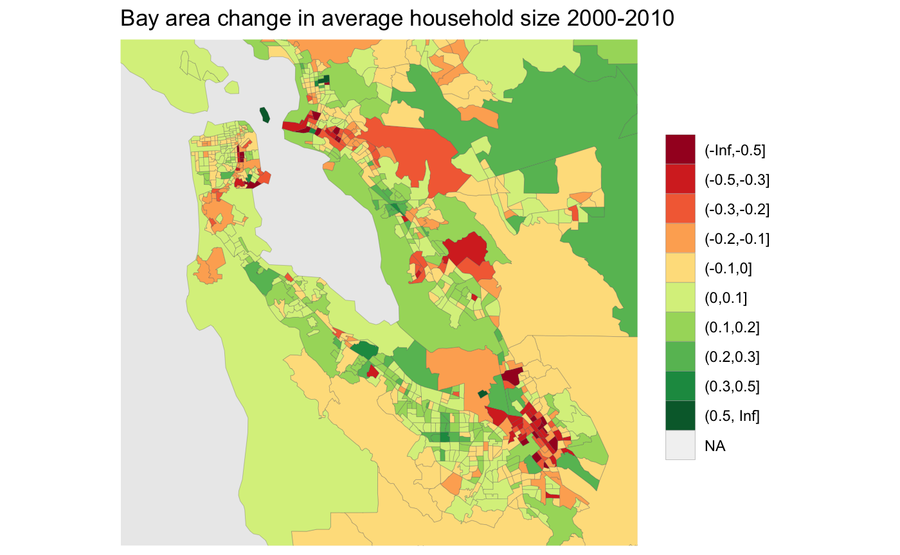

As an example we will explore changing household size between the 2000 and 2010 US census. First we need to build the metadata for our variables “H011001” for population and “H013001” for households.
variables=c(population="H011001",households="H013001") meta <- c(2000,2010) %>% lapply(function(year){ v <- variables %>% setNames(paste0(names(.),"_",year)) meta_for_additive_variables(paste0("dec",year),v) }) %>% bind_rows() meta #> # A tibble: 4 x 8 #> variable dataset label type aggregation rule geo_dataset parent #> <chr> <chr> <chr> <chr> <chr> <chr> <chr> <lgl> #> 1 H011001 dec2000 population_2000 Manual Additive Additi… dec2000 NA #> 2 H013001 dec2000 households_2000 Manual Additive Additi… dec2000 NA #> 3 H011001 dec2010 population_2010 Manual Additive Additi… dec2010 NA #> 4 H013001 dec2010 households_2010 Manual Additive Additi… dec2010 NA
Armed with that we can call get_tongfen_us_census to request the data on a common geography based on census tracts and compute the change in household size.
census_data <- get_tongfen_us_census(regions = list(state="CA"), meta=meta, level="tract") %>% mutate(change=population_2010/households_2010-population_2000/households_2000) #> Downloading: 16 kB Downloading: 16 kB Downloading: 16 kB Downloading: 16 kB Downloading: 25 kB Downloading: 25 kB Downloading: 25 kB Downloading: 25 kB Downloading: 25 kB Downloading: 25 kB Downloading: 25 kB Downloading: 25 kB Downloading: 25 kB Downloading: 25 kB Downloading: 41 kB Downloading: 41 kB Downloading: 41 kB Downloading: 41 kB Downloading: 41 kB Downloading: 41 kB Downloading: 49 kB Downloading: 49 kB Downloading: 49 kB Downloading: 49 kB Downloading: 58 kB Downloading: 58 kB Downloading: 58 kB Downloading: 58 kB Downloading: 65 kB Downloading: 65 kB Downloading: 65 kB Downloading: 65 kB Downloading: 65 kB Downloading: 65 kB Downloading: 65 kB Downloading: 65 kB Downloading: 81 kB Downloading: 81 kB Downloading: 89 kB Downloading: 89 kB Downloading: 89 kB Downloading: 89 kB Downloading: 94 kB Downloading: 94 kB Downloading: 94 kB Downloading: 94 kB Downloading: 99 kB Downloading: 99 kB Downloading: 99 kB Downloading: 99 kB Downloading: 100 kB Downloading: 100 kB Downloading: 100 kB Downloading: 100 kB Downloading: 100 kB Downloading: 100 kB Downloading: 100 kB Downloading: 100 kB Downloading: 100 kB Downloading: 100 kB Downloading: 120 kB Downloading: 120 kB Downloading: 130 kB Downloading: 130 kB Downloading: 130 kB Downloading: 130 kB Downloading: 130 kB Downloading: 130 kB Downloading: 140 kB Downloading: 140 kB Downloading: 140 kB Downloading: 140 kB Downloading: 140 kB Downloading: 140 kB Downloading: 140 kB Downloading: 140 kB Downloading: 140 kB Downloading: 140 kB Downloading: 150 kB Downloading: 150 kB Downloading: 150 kB Downloading: 150 kB Downloading: 150 kB Downloading: 150 kB Downloading: 150 kB Downloading: 150 kB Downloading: 150 kB Downloading: 150 kB Downloading: 150 kB Downloading: 150 kB Downloading: 170 kB Downloading: 170 kB Downloading: 170 kB Downloading: 170 kB Downloading: 170 kB Downloading: 170 kB Downloading: 190 kB Downloading: 190 kB Downloading: 190 kB Downloading: 190 kB Downloading: 190 kB Downloading: 190 kB Downloading: 190 kB Downloading: 190 kB Downloading: 200 kB Downloading: 200 kB Downloading: 200 kB Downloading: 200 kB Downloading: 200 kB Downloading: 200 kB Downloading: 200 kB Downloading: 200 kB Downloading: 220 kB Downloading: 220 kB Downloading: 230 kB Downloading: 230 kB Downloading: 230 kB Downloading: 230 kB Downloading: 230 kB Downloading: 230 kB Downloading: 230 kB Downloading: 230 kB Downloading: 240 kB Downloading: 240 kB Downloading: 250 kB Downloading: 250 kB Downloading: 260 kB Downloading: 260 kB Downloading: 260 kB Downloading: 260 kB Downloading: 270 kB Downloading: 270 kB Downloading: 270 kB Downloading: 270 kB Downloading: 280 kB Downloading: 280 kB Downloading: 280 kB Downloading: 280 kB Downloading: 290 kB Downloading: 290 kB Downloading: 290 kB Downloading: 290 kB Downloading: 300 kB Downloading: 300 kB Downloading: 300 kB Downloading: 300 kB Downloading: 300 kB Downloading: 300 kB Downloading: 310 kB Downloading: 310 kB Downloading: 310 kB Downloading: 310 kB Downloading: 320 kB Downloading: 320 kB Downloading: 320 kB Downloading: 320 kB Downloading: 320 kB Downloading: 320 kB Downloading: 320 kB Downloading: 320 kB Downloading: 320 kB Downloading: 320 kB Downloading: 330 kB Downloading: 330 kB Downloading: 330 kB Downloading: 330 kB Downloading: 340 kB Downloading: 340 kB Downloading: 340 kB Downloading: 340 kB Downloading: 360 kB Downloading: 360 kB Downloading: 360 kB Downloading: 360 kB Downloading: 370 kB Downloading: 370 kB Downloading: 370 kB Downloading: 370 kB Downloading: 370 kB Downloading: 370 kB Downloading: 370 kB Downloading: 370 kB Downloading: 390 kB Downloading: 390 kB Downloading: 400 kB Downloading: 400 kB Downloading: 400 kB Downloading: 400 kB Downloading: 400 kB Downloading: 400 kB Downloading: 400 kB Downloading: 400 kB Downloading: 400 kB Downloading: 400 kB Downloading: 400 kB Downloading: 400 kB Downloading: 400 kB Downloading: 400 kB Downloading: 400 kB Downloading: 400 kB Downloading: 400 kB Downloading: 400 kB Downloading: 420 kB Downloading: 420 kB Downloading: 420 kB Downloading: 420 kB Downloading: 430 kB Downloading: 430 kB Downloading: 430 kB Downloading: 430 kB Downloading: 430 kB Downloading: 430 kB Downloading: 440 kB Downloading: 440 kB Downloading: 440 kB Downloading: 440 kB Downloading: 440 kB Downloading: 440 kB Downloading: 450 kB Downloading: 450 kB Downloading: 450 kB Downloading: 450 kB Downloading: 450 kB Downloading: 450 kB Downloading: 450 kB Downloading: 450 kB Downloading: 450 kB Downloading: 450 kB Downloading: 460 kB Downloading: 460 kB Downloading: 460 kB Downloading: 460 kB Downloading: 470 kB Downloading: 470 kB Downloading: 470 kB Downloading: 470 kB Downloading: 470 kB Downloading: 470 kB Downloading: 480 kB Downloading: 480 kB Downloading: 480 kB Downloading: 480 kB Downloading: 490 kB Downloading: 490 kB Downloading: 490 kB Downloading: 490 kB Downloading: 490 kB Downloading: 490 kB Downloading: 490 kB Downloading: 490 kB Downloading: 500 kB Downloading: 500 kB Downloading: 500 kB Downloading: 500 kB Downloading: 500 kB Downloading: 500 kB Downloading: 500 kB Downloading: 500 kB Downloading: 500 kB Downloading: 500 kB Downloading: 510 kB Downloading: 510 kB Downloading: 510 kB Downloading: 510 kB Downloading: 520 kB Downloading: 520 kB Downloading: 520 kB Downloading: 520 kB Downloading: 530 kB Downloading: 530 kB Downloading: 530 kB Downloading: 530 kB Downloading: 530 kB Downloading: 530 kB Downloading: 530 kB Downloading: 530 kB Downloading: 530 kB Downloading: 530 kB Downloading: 550 kB Downloading: 550 kB Downloading: 550 kB Downloading: 550 kB Downloading: 550 kB Downloading: 550 kB Downloading: 550 kB Downloading: 550 kB Downloading: 550 kB Downloading: 550 kB Downloading: 570 kB Downloading: 570 kB Downloading: 580 kB Downloading: 580 kB Downloading: 580 kB Downloading: 580 kB Downloading: 580 kB Downloading: 580 kB Downloading: 580 kB Downloading: 580 kB Downloading: 580 kB Downloading: 580 kB Downloading: 600 kB Downloading: 600 kB Downloading: 600 kB Downloading: 600 kB Downloading: 600 kB Downloading: 600 kB Downloading: 600 kB Downloading: 600 kB Downloading: 600 kB Downloading: 600 kB Downloading: 610 kB Downloading: 610 kB Downloading: 610 kB Downloading: 610 kB Downloading: 620 kB Downloading: 620 kB Downloading: 620 kB Downloading: 620 kB Downloading: 620 kB Downloading: 620 kB Downloading: 630 kB Downloading: 630 kB Downloading: 630 kB Downloading: 630 kB Downloading: 630 kB Downloading: 630 kB Downloading: 630 kB Downloading: 630 kB Downloading: 630 kB Downloading: 630 kB Downloading: 630 kB Downloading: 630 kB Downloading: 630 kB Downloading: 630 kB Downloading: 640 kB Downloading: 640 kB Downloading: 640 kB Downloading: 640 kB Downloading: 650 kB Downloading: 650 kB Downloading: 650 kB Downloading: 650 kB Downloading: 650 kB Downloading: 650 kB Downloading: 650 kB Downloading: 650 kB Downloading: 650 kB Downloading: 650 kB Downloading: 660 kB Downloading: 660 kB Downloading: 660 kB Downloading: 660 kB Downloading: 660 kB Downloading: 660 kB Downloading: 660 kB Downloading: 660 kB Downloading: 660 kB Downloading: 660 kB Downloading: 660 kB Downloading: 660 kB Downloading: 680 kB Downloading: 680 kB Downloading: 690 kB Downloading: 690 kB Downloading: 690 kB Downloading: 690 kB Downloading: 690 kB Downloading: 690 kB Downloading: 690 kB Downloading: 690 kB Downloading: 690 kB Downloading: 690 kB Downloading: 700 kB Downloading: 700 kB Downloading: 710 kB Downloading: 710 kB Downloading: 710 kB Downloading: 710 kB Downloading: 730 kB Downloading: 730 kB Downloading: 730 kB Downloading: 730 kB Downloading: 740 kB Downloading: 740 kB Downloading: 740 kB Downloading: 740 kB Downloading: 750 kB Downloading: 750 kB Downloading: 750 kB Downloading: 750 kB Downloading: 770 kB Downloading: 770 kB Downloading: 770 kB Downloading: 770 kB Downloading: 780 kB Downloading: 780 kB Downloading: 780 kB Downloading: 780 kB Downloading: 780 kB Downloading: 780 kB Downloading: 790 kB Downloading: 790 kB Downloading: 790 kB Downloading: 790 kB Downloading: 800 kB Downloading: 800 kB Downloading: 810 kB Downloading: 810 kB Downloading: 810 kB Downloading: 810 kB Downloading: 810 kB Downloading: 810 kB Downloading: 830 kB Downloading: 830 kB Downloading: 830 kB Downloading: 830 kB Downloading: 830 kB Downloading: 830 kB Downloading: 850 kB Downloading: 850 kB Downloading: 850 kB Downloading: 850 kB Downloading: 850 kB Downloading: 850 kB Downloading: 850 kB Downloading: 850 kB Downloading: 850 kB Downloading: 850 kB Downloading: 850 kB Downloading: 850 kB Downloading: 870 kB Downloading: 870 kB Downloading: 870 kB Downloading: 870 kB Downloading: 870 kB Downloading: 870 kB Downloading: 870 kB Downloading: 870 kB Downloading: 870 kB Downloading: 870 kB Downloading: 890 kB Downloading: 890 kB Downloading: 890 kB Downloading: 890 kB Downloading: 900 kB Downloading: 900 kB Downloading: 900 kB Downloading: 900 kB Downloading: 900 kB Downloading: 900 kB Downloading: 900 kB Downloading: 900 kB Downloading: 900 kB Downloading: 900 kB Downloading: 910 kB Downloading: 910 kB Downloading: 910 kB Downloading: 910 kB Downloading: 910 kB Downloading: 910 kB Downloading: 910 kB Downloading: 910 kB Downloading: 910 kB Downloading: 910 kB Downloading: 910 kB Downloading: 910 kB Downloading: 930 kB Downloading: 930 kB Downloading: 930 kB Downloading: 930 kB Downloading: 940 kB Downloading: 940 kB Downloading: 940 kB Downloading: 940 kB Downloading: 940 kB Downloading: 940 kB Downloading: 940 kB Downloading: 940 kB Downloading: 960 kB Downloading: 960 kB Downloading: 960 kB Downloading: 960 kB Downloading: 960 kB Downloading: 960 kB Downloading: 960 kB Downloading: 960 kB Downloading: 960 kB Downloading: 960 kB Downloading: 980 kB Downloading: 980 kB Downloading: 980 kB Downloading: 980 kB Downloading: 980 kB Downloading: 980 kB Downloading: 980 kB Downloading: 980 kB Downloading: 980 kB Downloading: 980 kB Downloading: 990 kB Downloading: 990 kB Downloading: 990 kB Downloading: 990 kB Downloading: 1,000 kB Downloading: 1,000 kB Downloading: 1,000 kB Downloading: 1,000 kB Downloading: 1,000 kB Downloading: 1,000 kB Downloading: 1,000 kB Downloading: 1,000 kB Downloading: 1 MB Downloading: 1 MB Downloading: 1 MB Downloading: 1 MB Downloading: 1 MB Downloading: 1 MB Downloading: 1 MB Downloading: 1 MB Downloading: 1 MB Downloading: 1 MB Downloading: 1 MB Downloading: 1 MB Downloading: 1 MB Downloading: 1 MB Downloading: 1 MB Downloading: 1 MB Downloading: 1 MB Downloading: 1 MB Downloading: 1 MB Downloading: 1 MB Downloading: 1 MB Downloading: 1 MB Downloading: 1.1 MB Downloading: 1.1 MB Downloading: 1.1 MB Downloading: 1.1 MB Downloading: 1.1 MB Downloading: 1.1 MB Downloading: 1.1 MB Downloading: 1.1 MB Downloading: 1.1 MB Downloading: 1.1 MB Downloading: 1.1 MB Downloading: 1.1 MB Downloading: 1.1 MB Downloading: 1.1 MB Downloading: 1.1 MB Downloading: 1.1 MB Downloading: 1.1 MB Downloading: 1.1 MB Downloading: 1.1 MB Downloading: 1.1 MB Downloading: 1.1 MB Downloading: 1.1 MB Downloading: 1.1 MB Downloading: 1.1 MB Downloading: 1.1 MB Downloading: 1.1 MB Downloading: 1.1 MB Downloading: 1.1 MB Downloading: 1.1 MB Downloading: 1.1 MB Downloading: 1.1 MB Downloading: 1.1 MB Downloading: 1.1 MB Downloading: 1.1 MB Downloading: 1.1 MB Downloading: 1.1 MB Downloading: 1.1 MB Downloading: 1.1 MB Downloading: 1.2 MB Downloading: 1.2 MB Downloading: 1.2 MB Downloading: 1.2 MB Downloading: 1.2 MB Downloading: 1.2 MB Downloading: 1.2 MB Downloading: 1.2 MB Downloading: 1.2 MB Downloading: 1.2 MB Downloading: 1.2 MB Downloading: 1.2 MB Downloading: 1.2 MB Downloading: 1.2 MB Downloading: 1.2 MB Downloading: 1.2 MB Downloading: 1.2 MB Downloading: 1.2 MB Downloading: 1.2 MB Downloading: 1.2 MB Downloading: 1.2 MB Downloading: 1.2 MB Downloading: 1.2 MB Downloading: 1.2 MB Downloading: 1.2 MB Downloading: 1.2 MB Downloading: 1.2 MB Downloading: 1.2 MB Downloading: 1.2 MB Downloading: 1.2 MB Downloading: 1.2 MB Downloading: 1.2 MB Downloading: 1.2 MB Downloading: 1.2 MB Downloading: 1.2 MB Downloading: 1.2 MB Downloading: 1.2 MB Downloading: 1.2 MB Downloading: 1.2 MB Downloading: 1.2 MB Downloading: 1.2 MB Downloading: 1.2 MB Downloading: 1.2 MB Downloading: 1.2 MB Downloading: 1.2 MB Downloading: 1.2 MB Downloading: 1.2 MB Downloading: 1.2 MB Downloading: 1.2 MB Downloading: 1.2 MB Downloading: 1.2 MB Downloading: 1.2 MB Downloading: 1.2 MB Downloading: 1.2 MB Downloading: 1.2 MB Downloading: 1.2 MB Downloading: 1.2 MB Downloading: 1.2 MB Downloading: 1.2 MB Downloading: 1.2 MB Downloading: 1.2 MB Downloading: 1.2 MB Downloading: 1.2 MB Downloading: 1.2 MB Downloading: 1.2 MB Downloading: 1.2 MB Downloading: 1.2 MB Downloading: 1.2 MB Downloading: 1.3 MB Downloading: 1.3 MB Downloading: 1.3 MB Downloading: 1.3 MB Downloading: 1.3 MB Downloading: 1.3 MB Downloading: 1.3 MB Downloading: 1.3 MB Downloading: 1.3 MB Downloading: 1.3 MB Downloading: 1.3 MB Downloading: 1.3 MB Downloading: 1.3 MB Downloading: 1.3 MB Downloading: 1.3 MB Downloading: 1.3 MB Downloading: 1.3 MB Downloading: 1.3 MB Downloading: 1.3 MB Downloading: 1.3 MB Downloading: 1.3 MB Downloading: 1.3 MB Downloading: 1.3 MB Downloading: 1.3 MB Downloading: 1.3 MB Downloading: 1.3 MB Downloading: 1.3 MB Downloading: 1.3 MB Downloading: 1.3 MB Downloading: 1.3 MB Downloading: 1.3 MB Downloading: 1.3 MB Downloading: 1.3 MB Downloading: 1.3 MB Downloading: 1.3 MB Downloading: 1.3 MB Downloading: 1.3 MB Downloading: 1.3 MB Downloading: 1.3 MB Downloading: 1.3 MB Downloading: 1.3 MB Downloading: 1.3 MB Downloading: 1.3 MB Downloading: 1.3 MB Downloading: 1.3 MB Downloading: 1.3 MB Downloading: 1.4 MB Downloading: 1.4 MB Downloading: 1.4 MB Downloading: 1.4 MB Downloading: 1.4 MB Downloading: 1.4 MB Downloading: 1.4 MB Downloading: 1.4 MB Downloading: 1.4 MB Downloading: 1.4 MB Downloading: 1.4 MB Downloading: 1.4 MB Downloading: 1.4 MB Downloading: 1.4 MB Downloading: 1.4 MB Downloading: 1.4 MB Downloading: 1.4 MB Downloading: 1.4 MB Downloading: 1.4 MB Downloading: 1.4 MB Downloading: 1.4 MB Downloading: 1.4 MB Downloading: 1.4 MB Downloading: 1.4 MB Downloading: 1.4 MB Downloading: 1.4 MB Downloading: 1.4 MB Downloading: 1.4 MB Downloading: 1.4 MB Downloading: 1.4 MB Downloading: 1.4 MB Downloading: 1.4 MB Downloading: 1.4 MB Downloading: 1.4 MB Downloading: 1.4 MB Downloading: 1.4 MB Downloading: 1.4 MB Downloading: 1.4 MB Downloading: 1.4 MB Downloading: 1.4 MB Downloading: 1.4 MB Downloading: 1.4 MB Downloading: 1.4 MB Downloading: 1.4 MB Downloading: 1.4 MB Downloading: 1.4 MB Downloading: 1.4 MB Downloading: 1.4 MB Downloading: 1.4 MB Downloading: 1.4 MB Downloading: 1.4 MB Downloading: 1.4 MB Downloading: 1.4 MB Downloading: 1.4 MB Downloading: 1.4 MB Downloading: 1.4 MB Downloading: 1.5 MB Downloading: 1.5 MB Downloading: 1.5 MB Downloading: 1.5 MB Downloading: 1.5 MB Downloading: 1.5 MB Downloading: 1.5 MB Downloading: 1.5 MB Downloading: 1.5 MB Downloading: 1.5 MB Downloading: 1.5 MB Downloading: 1.5 MB Downloading: 1.5 MB Downloading: 1.5 MB Downloading: 1.5 MB Downloading: 1.5 MB Downloading: 1.5 MB Downloading: 1.5 MB Downloading: 1.5 MB Downloading: 1.5 MB Downloading: 1.5 MB Downloading: 1.5 MB Downloading: 1.5 MB Downloading: 1.5 MB Downloading: 1.5 MB Downloading: 1.5 MB Downloading: 1.5 MB Downloading: 1.5 MB Downloading: 1.5 MB Downloading: 1.5 MB Downloading: 1.5 MB Downloading: 1.5 MB Downloading: 1.5 MB Downloading: 1.5 MB Downloading: 1.5 MB Downloading: 1.5 MB Downloading: 1.5 MB Downloading: 1.5 MB Downloading: 1.5 MB Downloading: 1.5 MB Downloading: 1.5 MB Downloading: 1.5 MB Downloading: 1.5 MB Downloading: 1.5 MB Downloading: 1.5 MB Downloading: 1.5 MB Downloading: 1.5 MB Downloading: 1.5 MB Downloading: 1.5 MB Downloading: 1.5 MB Downloading: 1.6 MB Downloading: 1.6 MB Downloading: 1.6 MB Downloading: 1.6 MB Downloading: 1.6 MB Downloading: 1.6 MB Downloading: 1.6 MB Downloading: 1.6 MB Downloading: 1.6 MB Downloading: 1.6 MB Downloading: 1.6 MB Downloading: 1.6 MB Downloading: 1.6 MB Downloading: 1.6 MB Downloading: 1.6 MB Downloading: 1.6 MB Downloading: 1.6 MB Downloading: 1.6 MB Downloading: 1.6 MB Downloading: 1.6 MB Downloading: 1.6 MB Downloading: 1.6 MB Downloading: 1.6 MB Downloading: 1.6 MB Downloading: 1.6 MB Downloading: 1.6 MB Downloading: 1.6 MB Downloading: 1.6 MB Downloading: 1.6 MB Downloading: 1.6 MB Downloading: 1.6 MB Downloading: 1.6 MB Downloading: 1.6 MB Downloading: 1.6 MB Downloading: 1.6 MB Downloading: 1.6 MB Downloading: 1.6 MB Downloading: 1.6 MB Downloading: 1.6 MB Downloading: 1.6 MB Downloading: 1.6 MB Downloading: 1.6 MB Downloading: 1.6 MB Downloading: 1.6 MB Downloading: 1.6 MB Downloading: 1.6 MB Downloading: 1.6 MB Downloading: 1.6 MB Downloading: 1.6 MB Downloading: 1.6 MB Downloading: 1.6 MB Downloading: 1.6 MB Downloading: 1.6 MB Downloading: 1.6 MB Downloading: 1.6 MB Downloading: 1.6 MB Downloading: 1.6 MB Downloading: 1.6 MB Downloading: 1.6 MB Downloading: 1.6 MB Downloading: 1.6 MB Downloading: 1.6 MB Downloading: 1.6 MB Downloading: 1.6 MB Downloading: 1.6 MB Downloading: 1.6 MB Downloading: 1.6 MB Downloading: 1.6 MB Downloading: 1.7 MB Downloading: 1.7 MB Downloading: 1.7 MB Downloading: 1.7 MB Downloading: 1.7 MB Downloading: 1.7 MB Downloading: 1.7 MB Downloading: 1.7 MB Downloading: 1.7 MB Downloading: 1.7 MB Downloading: 1.7 MB Downloading: 1.7 MB Downloading: 1.7 MB Downloading: 1.7 MB Downloading: 1.7 MB Downloading: 1.7 MB Downloading: 1.7 MB Downloading: 1.7 MB Downloading: 1.7 MB Downloading: 1.7 MB Downloading: 1.7 MB Downloading: 1.7 MB Downloading: 1.7 MB Downloading: 1.7 MB Downloading: 1.7 MB Downloading: 1.7 MB Downloading: 1.7 MB Downloading: 1.7 MB Downloading: 1.7 MB Downloading: 1.7 MB Downloading: 1.7 MB Downloading: 1.7 MB Downloading: 1.7 MB Downloading: 1.7 MB Downloading: 1.7 MB Downloading: 1.7 MB Downloading: 1.7 MB Downloading: 1.7 MB Downloading: 1.7 MB Downloading: 1.7 MB Downloading: 1.8 MB Downloading: 1.8 MB Downloading: 1.8 MB Downloading: 1.8 MB Downloading: 1.8 MB Downloading: 1.8 MB Downloading: 1.8 MB Downloading: 1.8 MB Downloading: 1.8 MB Downloading: 1.8 MB Downloading: 1.8 MB Downloading: 1.8 MB Downloading: 1.8 MB Downloading: 1.8 MB Downloading: 1.8 MB Downloading: 1.8 MB Downloading: 1.8 MB Downloading: 1.8 MB Downloading: 1.8 MB Downloading: 1.8 MB Downloading: 1.8 MB Downloading: 1.8 MB Downloading: 1.8 MB Downloading: 1.8 MB Downloading: 1.8 MB Downloading: 1.8 MB Downloading: 1.8 MB Downloading: 1.8 MB Downloading: 1.8 MB Downloading: 1.8 MB Downloading: 1.8 MB Downloading: 1.8 MB Downloading: 1.8 MB Downloading: 1.8 MB Downloading: 1.8 MB Downloading: 1.8 MB Downloading: 1.8 MB Downloading: 1.8 MB Downloading: 1.8 MB Downloading: 1.8 MB Downloading: 1.8 MB Downloading: 1.8 MB Downloading: 1.8 MB Downloading: 1.8 MB Downloading: 1.8 MB Downloading: 1.8 MB Downloading: 1.8 MB Downloading: 1.8 MB Downloading: 1.9 MB Downloading: 1.9 MB Downloading: 1.9 MB Downloading: 1.9 MB Downloading: 1.9 MB Downloading: 1.9 MB Downloading: 1.9 MB Downloading: 1.9 MB Downloading: 1.9 MB Downloading: 1.9 MB Downloading: 1.9 MB Downloading: 1.9 MB Downloading: 1.9 MB Downloading: 1.9 MB Downloading: 1.9 MB Downloading: 1.9 MB Downloading: 1.9 MB Downloading: 1.9 MB Downloading: 1.9 MB Downloading: 1.9 MB Downloading: 1.9 MB Downloading: 1.9 MB Downloading: 1.9 MB Downloading: 1.9 MB Downloading: 1.9 MB Downloading: 1.9 MB Downloading: 1.9 MB Downloading: 1.9 MB Downloading: 1.9 MB Downloading: 1.9 MB Downloading: 1.9 MB Downloading: 1.9 MB Downloading: 1.9 MB Downloading: 1.9 MB Downloading: 1.9 MB Downloading: 1.9 MB Downloading: 1.9 MB Downloading: 1.9 MB Downloading: 1.9 MB Downloading: 1.9 MB Downloading: 1.9 MB Downloading: 1.9 MB Downloading: 1.9 MB Downloading: 1.9 MB Downloading: 1.9 MB Downloading: 1.9 MB Downloading: 2 MB Downloading: 2 MB Downloading: 2 MB Downloading: 2 MB Downloading: 2 MB Downloading: 2 MB Downloading: 2 MB Downloading: 2 MB Downloading: 2 MB Downloading: 2 MB Downloading: 2 MB Downloading: 2 MB Downloading: 2 MB Downloading: 2 MB Downloading: 2 MB Downloading: 2 MB Downloading: 2 MB Downloading: 2 MB Downloading: 2 MB Downloading: 2 MB Downloading: 2 MB Downloading: 2 MB Downloading: 2 MB Downloading: 2 MB Downloading: 2 MB Downloading: 2 MB Downloading: 2 MB Downloading: 2 MB Downloading: 2 MB Downloading: 2 MB Downloading: 2 MB Downloading: 2 MB Downloading: 2 MB Downloading: 2 MB Downloading: 2 MB Downloading: 2 MB Downloading: 2 MB Downloading: 2 MB Downloading: 2 MB Downloading: 2 MB Downloading: 2 MB Downloading: 2 MB Downloading: 2 MB Downloading: 2 MB Downloading: 2 MB Downloading: 2 MB Downloading: 2 MB Downloading: 2 MB Downloading: 2 MB Downloading: 2 MB Downloading: 2 MB Downloading: 2 MB Downloading: 2 MB Downloading: 2 MB Downloading: 2 MB Downloading: 2 MB Downloading: 2 MB Downloading: 2 MB Downloading: 2.1 MB Downloading: 2.1 MB Downloading: 2.1 MB Downloading: 2.1 MB Downloading: 2.1 MB Downloading: 2.1 MB Downloading: 2.1 MB Downloading: 2.1 MB Downloading: 2.1 MB Downloading: 2.1 MB Downloading: 2.1 MB Downloading: 2.1 MB Downloading: 2.1 MB Downloading: 2.1 MB Downloading: 2.1 MB Downloading: 2.1 MB Downloading: 2.1 MB Downloading: 2.1 MB Downloading: 2.1 MB Downloading: 2.1 MB Downloading: 2.1 MB Downloading: 2.1 MB Downloading: 2.1 MB Downloading: 2.1 MB Downloading: 2.1 MB Downloading: 2.1 MB Downloading: 2.1 MB Downloading: 2.1 MB Downloading: 2.1 MB Downloading: 2.1 MB Downloading: 2.1 MB Downloading: 2.1 MB Downloading: 2.1 MB Downloading: 2.1 MB Downloading: 2.1 MB Downloading: 2.1 MB Downloading: 2.1 MB Downloading: 2.1 MB Downloading: 2.1 MB Downloading: 2.1 MB Downloading: 2.1 MB Downloading: 2.1 MB Downloading: 2.1 MB Downloading: 2.1 MB Downloading: 2.1 MB Downloading: 2.1 MB Downloading: 2.1 MB Downloading: 2.1 MB Downloading: 2.1 MB Downloading: 2.1 MB Downloading: 2.2 MB Downloading: 2.2 MB Downloading: 2.2 MB Downloading: 2.2 MB Downloading: 2.2 MB Downloading: 2.2 MB Downloading: 2.2 MB Downloading: 2.2 MB Downloading: 2.2 MB Downloading: 2.2 MB Downloading: 2.2 MB Downloading: 2.2 MB Downloading: 2.2 MB Downloading: 2.2 MB Downloading: 2.2 MB Downloading: 2.2 MB Downloading: 2.2 MB Downloading: 2.2 MB Downloading: 2.2 MB Downloading: 2.2 MB Downloading: 2.2 MB Downloading: 2.2 MB Downloading: 2.2 MB Downloading: 2.2 MB Downloading: 2.2 MB Downloading: 2.2 MB Downloading: 2.2 MB Downloading: 2.2 MB Downloading: 2.2 MB Downloading: 2.2 MB Downloading: 2.2 MB Downloading: 2.2 MB Downloading: 2.2 MB Downloading: 2.2 MB Downloading: 2.2 MB Downloading: 2.2 MB Downloading: 2.2 MB Downloading: 2.2 MB Downloading: 2.2 MB Downloading: 2.2 MB Downloading: 2.2 MB Downloading: 2.2 MB Downloading: 2.2 MB Downloading: 2.2 MB Downloading: 2.2 MB Downloading: 2.2 MB Downloading: 2.2 MB Downloading: 2.2 MB Downloading: 2.2 MB Downloading: 2.2 MB Downloading: 2.2 MB Downloading: 2.2 MB Downloading: 2.2 MB Downloading: 2.2 MB Downloading: 2.2 MB Downloading: 2.2 MB Downloading: 2.3 MB Downloading: 2.3 MB Downloading: 2.3 MB Downloading: 2.3 MB Downloading: 2.3 MB Downloading: 2.3 MB Downloading: 2.3 MB Downloading: 2.3 MB Downloading: 2.3 MB Downloading: 2.3 MB Downloading: 2.3 MB Downloading: 2.3 MB Downloading: 2.3 MB Downloading: 2.3 MB Downloading: 2.3 MB Downloading: 2.3 MB Downloading: 2.3 MB Downloading: 2.3 MB Downloading: 2.3 MB Downloading: 2.3 MB Downloading: 2.3 MB Downloading: 2.3 MB Downloading: 2.3 MB Downloading: 2.3 MB census_data %>% names() #> [1] "TongfenID" "TongfenUID" "geometry" "population_2000" #> [5] "households_2000" "population_2010" "households_2010" "change"
We bin the data for better plotting and zoom in on the Bay area.
census_data %>% mutate(c=cut(change,c(-Inf,-0.5,-0.3,-0.2,-0.1,0,0.1,0.2,0.3,0.5,Inf))) %>% ggplot() + geom_sf(aes(fill=c), size=0.05) + scale_fill_brewer(palette = "RdYlGn") + labs(title="Bay area change in average household size 2000-2010", fill=NULL) + #geom_water() + geom_roads() + coord_sf(datum=NA,xlim=c(-122.6,-121.7),ylim=c(37.2,37.9))
